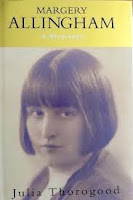
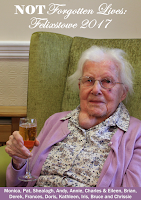
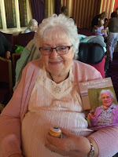
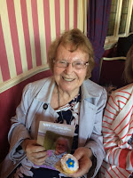
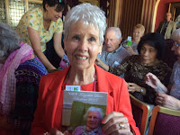
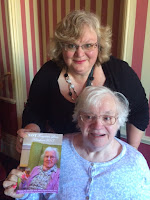

 |
| It's there, (in illegible white type) & I was Julia T then |
{kind=link}
 So what’s the difference between a life-writer and a
biographer? As far as I'm concerned the difference is rooted in the
words. Life-writing comes from
Anglo-Saxon: biography from Greek. They mean the same but the
first has a sense of something unadorned and fundamental: the second is
distinctly arty. Last Saturday, in an upstairs room in Felixstowe’s Orwell
Hotel, life-writing met biography in conditions of great amity -- appropriately so. Whenever I come to Felixstowe, which is at least annually for
the Book Festival and more frequently for agreeable connected
matters, I think of it as the Happy Place – a reassuring combination of the
Latin felix (happy) and Old English stowe (place).
So what’s the difference between a life-writer and a
biographer? As far as I'm concerned the difference is rooted in the
words. Life-writing comes from
Anglo-Saxon: biography from Greek. They mean the same but the
first has a sense of something unadorned and fundamental: the second is
distinctly arty. Last Saturday, in an upstairs room in Felixstowe’s Orwell
Hotel, life-writing met biography in conditions of great amity -- appropriately so. Whenever I come to Felixstowe, which is at least annually for
the Book Festival and more frequently for agreeable connected
matters, I think of it as the Happy Place – a reassuring combination of the
Latin felix (happy) and Old English stowe (place).
Last Saturday's occasion had initially been prompted by biography. When I first wrote about the detective novelist, Margery Allingham, all those years ago in 1991, I wasn’t allowed my preferred title of “Adventures” the publisher insisted on Margery Allingham: a Biography -- rather as if Margery herself had shape-shifted (which I suppose she had) and was not a person any more, or a writer, but “a biography”. Meanwhile a significant piece of Margery's own life-writing had been left on the cutting-room floor (ie under my desk). This was The Relay, her account of caring for her older relatives in their last years. It had remained unpublished in her lifetime as it failed to fit the Queen of Crime persona, then after her death, social circumstances changed and it had begun to feel obsolete.
Yet, in time of need when I was struggling and failing to care adequately for my mother, I discovered that Margery's insights from The Relay had stuck in my mind. This sparked my own life-writing volume, Beloved Old Age and What To Do About It and my initial assignment for the 2017 Book Festival had been to talk about that. But ... one thing had led to another in the planning process and when I arrived at the Happy Place last Saturday my main excitement was the launch of NOT Forgotten Lives: Felixstowe 2017 (see last month's blogpost) and the prospect of meeting some of the contributors.


My wonderful friend Nicci Gerrard came to Felixstowe to take their photos. Here are Shelagh and Pat. Neither of them lives with dementia but both are restricted in their mobility. You might be distracted by their wheelchair and zimmer frame and fail to notice their personalities and experience. That would be a bad mistake. Both are retired nurses -- and what great contributions they made to our discussions when we were talking about ECT treatment for women with depression fifty years ago and the status of nursing then. Pat is a great reader and has some cogent views of family care for older people now.{kind=link}

Here are Jenny and Mary. Beautiful women separated from their husbands by dementia. Look at the book and see Jenny's photo of herself and Bruce, stepping out together, three days married in 1964. Look at the book and see Mary's photo of herself pushing Brian as they venture out of his nursing home for a walk, 57 years later. Their husbands can no longer communicate, Jenny and Mary must write on their behalf if they are not to be forgotten.{kind=link}
{kind=link}

Here are Ingrid and Julie, two loving daughters supporting their mothers. Ingrid took the bold decision to write about her mother Annie's life today, making the point that life does not end when you move into residential care -- it changes. Julie did not write on behalf of her mother, Tracey, the care-home manager, spent time listening to Iris (who forgets she has dementia) and wrote down what she said. Then Julie brought Iris out of the home and along to the event. Of all the things that made me glad that day, Julie's email afterwards telling me that her mother had felt "like a bit of a celebrity" was the best.We were happy, we drank non-alcoholic bubbly and ate small cakes decorated with forget-me-nots. Sharon Harkin - our benefactor from the East of England Co-op -- made an excellent speech and gave us chocolate bars (as well as sponsoring the production costs). She could be Hrothgar from Beowulf. One of the most powerful symbols in Old English literature is Heorot, the lighted hall, where feasting, tale-telling, and the giving of rings takes place while outside there is darkness and the threat of monsters. Dementia is our besieging monster, the illness that is taking loved ones from us as surely as Grendel rushes in to seize a sleeping warrior. Dementia is a classic-derived word – the de-construction of the mind. I think of J K Rowling’s Dementors, clammy and insidious as the mists across the lonely moorland where Grendel’s mother lurks. People who live with dementia sometimes refer to it as brain-fog -- but if you're guessing this would be an Old English construction you're only half right: it seems the origins of the word "fog" are ... obscure.
Life-writing is our fight back against the fog of forgetting. I ask you to raise your glasses to all who contributed to NOT Forgotten Lives: Felixstowe 2017, a candle flame against oblivion.